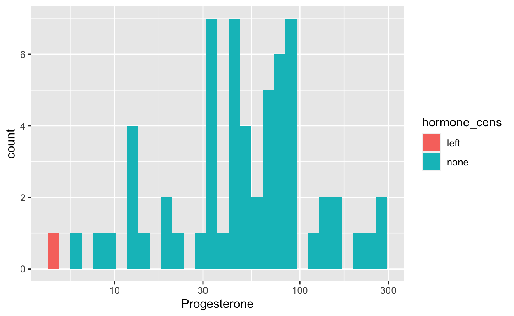
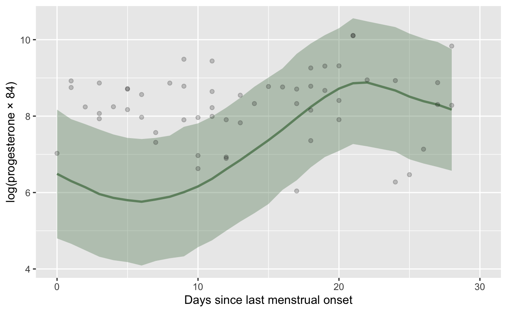
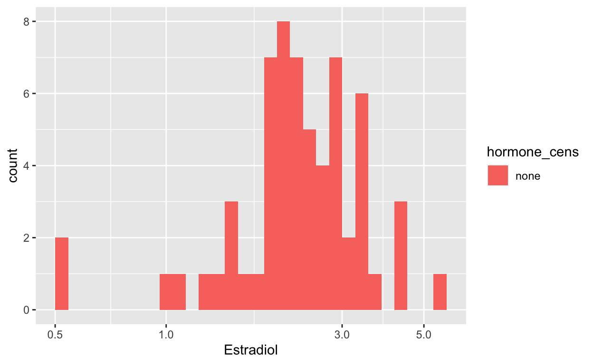
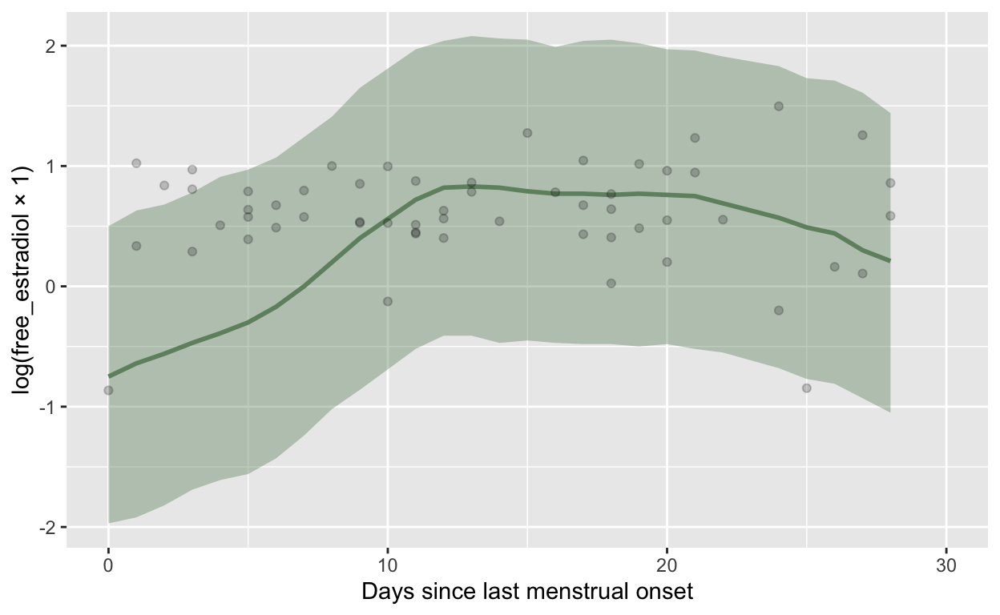
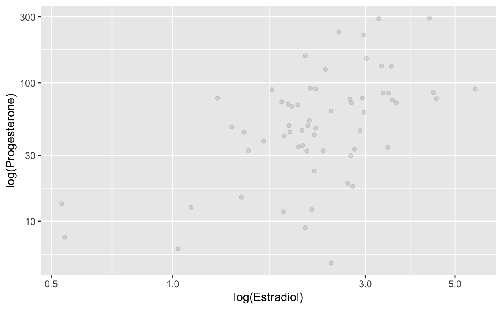

https://www.sciencedirect.com/science/article/pii/S0018506X1530180X We asked participants to provide saliva samples (~5 mL) via passive drool, from which we assayed estradiol, progesterone, and testosterone twice during the study: once during an initial session, and once upon awakening the day of a follow-up session one week later. Saliva samples were pipetted from a cup to test tubes, then frozen at -20° C. Prior to assays, frozen samples were thawed, mixed by vortexing, then centrifuged for 15 minutes to break up and precipitate mucins. Salivary 17β estradiol, progesterone, and testosterone concentrations were determined using enzyme-linked immunosorbent assays (ELISA) designed for saliva by Salimetrics LLC (Carlsbad, CA). The manufacturer reports a 0.8 correlation of saliva to serum for estradiol and progesterone, and a .61 correlation of saliva to serum for testosterone (for women). The minimum sensitivity is approximately 0.1 pg/ml for estradiol, 5 pg/ml for progesterone, and 1 pg/ml for testosterone. Intra-assay CVs, calculated as the mean CV of duplicate determinations, were 6.58%, 14.52%, and 4.07%, respectively. Inter-assay CVs were 2.68%, 4.83%, and 7.61%, respectively. The relatively high intra-assay CV for progesterone was more pronounced for relatively low values: 33.99% for the 13 values under 30 pg/ml, and 10.05% for the 49 values greater than 30 pg/ml.
As expected, progesterone levels rise markedly during the second half of the cycle, as reported by women. One cannot detect a notable peak in estradiol mid-cycle, perhaps because surge days varied across a wide span of days (e.g., Stirnemann et al., 2013), as well as the secondary rise of this hormone due to secretion by the corpus luteum. Errors in self-reported beginning of last menses could also have an effect (Wagienka & Baird, 2005). Nonetheless, the estradiol to progesterone ratio notably peaked during the late follicular phase and dropped during the luteal phase, consistent with expectation (Baird et al., 1991). In designing the study, our goal was to examine the potential proximate influences of hormones on women’s sexual desires and to do so by directly examining ovarian hormone levels. While many studies use self-reported cycle day to infer hormonal characteristics, substantial inter- and intra-individual variations in natural cycle length and in relative hormone production mean that associations between self-reported cycle day and hormone levels may be modest. Our results appear to support that view.
grebe <- rio::import("data/grebe/EP_cycle_info.xlsx")
ggplot(grebe, aes(dayofcycle, log(estradiol))) + geom_point() + geom_smooth()
`geom_smooth()` using method = 'loess' and formula 'y ~ x'Warning: Removed 4 rows containing non-finite values (stat_smooth).Warning: Removed 4 rows containing missing values (geom_point).ggplot(grebe, aes(dayofcycle, log(progesterone))) + geom_point() + geom_smooth()
`geom_smooth()` using method = 'loess' and formula 'y ~ x'Warning: Removed 5 rows containing non-finite values (stat_smooth).Warning: Removed 5 rows containing missing values (geom_point).ggplot(grebe, aes(dayofcycle, log(estradiol/progesterone))) + geom_point() + geom_smooth()
`geom_smooth()` using method = 'loess' and formula 'y ~ x'Warning: Removed 5 rows containing non-finite values (stat_smooth).
Warning: Removed 5 rows containing missing values (geom_point).grebe$estradiol[grebe$estradiol == min(grebe$estradiol, na.rm = T)]
[1] 0.53 NA NA NA NAgrebe$progesterone[grebe$progesterone == min(grebe$progesterone, na.rm = T)]
[1] NA 3.32 NA NA NA NA
FALSE TRUE
62 4
FALSE TRUE
FALSE 61 1
TRUE 0 4
FALSE TRUE
61 5 grebe <- grebe %>%
mutate(estradiol_cens = if_else(estradiol <= 0.1, "left", "none"),
estradiol = if_else(estradiol_cens == "left", 0.1, estradiol)
) %>%
mutate(
progesterone_cens = if_else(progesterone <= 5, "left", "none"),
progesterone = if_else(progesterone_cens == "left", 5, progesterone)
)
table(grebe$estradiol_cens)
none
62 table(grebe$progesterone_cens)
left none
1 60 is.na(progesterone)
is.na(estradiol) FALSE TRUE
FALSE 61 1
TRUE 0 4grebe <- grebe %>%
rename(id = ID, fc_day = dayofcycle, cycle_length = typcyclength) %>%
mutate(fc_day = fc_day - 1) %>%
mutate(cycle = 1, bc_day = NA_real_)
range(grebe$fc_day, na.rm = T)
[1] 0 31range(grebe$cycle_length, na.rm = T)
[1] 22 39rio::export(grebe, "data/grebe/grebe.rds")
summary(lme4::lmer(scale(log(estradiol)) ~ (1|id), grebe))
Linear mixed model fit by REML ['lmerMod']
Formula: scale(log(estradiol)) ~ (1 | id)
Data: grebe
REML criterion at convergence: 168.2
Scaled residuals:
Min 1Q Median 3Q Max
-2.5811 -0.3671 0.1274 0.4636 2.2036
Random effects:
Groups Name Variance Std.Dev.
id (Intercept) 0.4994 0.7067
Residual 0.4964 0.7046
Number of obs: 62, groups: id, 33
Fixed effects:
Estimate Std. Error t value
(Intercept) 0.005556 0.152838 0.036Linear mixed model fit by REML ['lmerMod']
Formula: scale(log(progesterone)) ~ (1 | id)
Data: grebe
REML criterion at convergence: 169.2
Scaled residuals:
Min 1Q Median 3Q Max
-2.06917 -0.52187 -0.06285 0.57256 1.62996
Random effects:
Groups Name Variance Std.Dev.
id (Intercept) 0.424 0.6511
Residual 0.586 0.7655
Number of obs: 61, groups: id, 33
Fixed effects:
Estimate Std. Error t value
(Intercept) -0.002983 0.150750 -0.02source("0_summary_functions.R")
Loading required package: RcppLoading 'brms' package (version 2.16.2). Useful instructions
can be found by typing help('brms'). A more detailed introduction
to the package is available through vignette('brms_overview').
Attaching package: 'brms'The following object is masked from 'package:stats':
ardf <- grebe %>% select(id, fc_day, hormone = progesterone, hormone_cens = progesterone_cens, cycle_length, cycle, bc_day)
summarise_hormone(df = df,
Dataset = "Grebe et al. 2016",
Hormone = "Progesterone",
Citation = "Grebe, N. M., Emery Thompson, M., & Gangestad, S. W. (2016). Hormonal predictors of women’s extra-pair vs. in-pair sexual attraction in natural cycles: Implications for extended sexuality. Hormones and Behavior, 78, 211–219. https://doi.org/10.1016/j.yhbeh.2015.11.008",
LOD = 5,
LOQ = 10,
CV_intra = 14.52,
CV_inter = 4.83,
Method = "Salivary immunoassay (Salimetrics)",
Procedure = "We asked participants to provide saliva samples (~5 mL) via passive drool, from which we assayed estradiol, progesterone, and testosterone twice during the study: once during an initial session, and once upon awakening the day of a follow-up session one week later. Saliva samples were pipetted from a cup to test tubes, then frozen at -20° C. Prior to assays, frozen samples were thawed, mixed by vortexing, then centrifuged for 15 minutes to break up and precipitate mucins. Salivary 17β estradiol, progesterone, and testosterone concentrations were determined using enzyme-linked immunosorbent assays (ELISA) designed for saliva by Salimetrics LLC (Carlsbad, CA). ",
Scheduling = "Irrespective of cycle phase. 'We do emphasize that, although we sought to representatively sample days and phases of the cycle, by chance the luteal phase appears to have been overrepresented in our sample.'")
`summarise()` has grouped output by 'id'. You can override using the `.groups` argument.Joining, by = "bc_day"Warning: Unknown or uninitialised column: `lh_day`.Warning: Results may not be meaningful for censored models.Warning: Some Pareto k diagnostic values are too high. See help('pareto-k-diagnostic') for details.Warning: Results may not be meaningful for censored models.
Warning: Results may not be meaningful for censored models.Warning in sqrt(r2[, "Estimate"]): NaNs producedWarning in sqrt(r2[, "Q2.5"]): NaNs producedWarning in sqrt(r2[, "Q97.5"]): NaNs produced$Dataset
[1] "Grebe et al. 2016"
$Citation
[1] "Grebe, N. M., Emery Thompson, M., & Gangestad, S. W. (2016). Hormonal predictors of women’s extra-pair vs. in-pair sexual attraction in natural cycles: Implications for extended sexuality. Hormones and Behavior, 78, 211–219. https://doi.org/10.1016/j.yhbeh.2015.11.008"
$Hormone
[1] "Progesterone"
$Method
[1] "Salivary immunoassay (Salimetrics)"
$`Limit of detection`
[1] 5
$LOQ
[1] 10
$`Intraassay CV`
[1] 14.52
$`Interassay CV`
[1] 4.83
$Procedure
[1] "We asked participants to provide saliva samples (~5 mL) via passive drool, from which we assayed estradiol, progesterone, and testosterone twice during the study: once during an initial session, and once upon awakening the day of a follow-up session one week later. Saliva samples were pipetted from a cup to test tubes, then frozen at -20° C. Prior to assays, frozen samples were thawed, mixed by vortexing, then centrifuged for 15 minutes to break up and precipitate mucins. Salivary 17β estradiol, progesterone, and testosterone concentrations were determined using enzyme-linked immunosorbent assays (ELISA) designed for saliva by Salimetrics LLC (Carlsbad, CA). "
$Scheduling
[1] "Irrespective of cycle phase. 'We do emphasize that, although we sought to representatively sample days and phases of the cycle, by chance the luteal phase appears to have been overrepresented in our sample.'"
$LH_test
[1] ""
$distribution`stat_bin()` using `bins = 30`. Pick better value with `binwidth`.Warning: Removed 5 rows containing non-finite values (stat_bin).
$mean
[1] 69.62279
$logmean
[1] 3.883606
$logsd
[1] 0.9077089
$median
[1] 49.28
$sd
[1] 62.43726
$mad
[1] 39.70403
$range
[1] "5.00, 293.46"
$missing
[1] 5
$outliers
[1] 0
$censored
[1] 1
$n_women
[1] 33
$n_cycles
[1] 33
$n_days
[1] 66
$age
[1] NA
$in_relationship
[1] NA
$cycle_length
[1] "28.8±3.71"
$usable_n
[1] 57
$usable_n_women
[1] 31
$no_lh_surge_woman
[1] "NA"
$no_lh_surge_cycle
[1] "NA"
$var_id_loo
[1] "0.11 [-0.05;0.25]"
$var_id
[1] "0.58 [0.13;0.96] (37%)"
$var_resid
[1] "0.75 [0.56;1.00] (63%)"
$fc_day_modelWarning: There were 2 divergent transitions after warmup.
Increasing adapt_delta above may help. See http://mc-stan.org/misc/
warnings.html#divergent-transitions-after-warmup
Family: gaussian
Links: mu = identity; sigma = identity
Formula: log(hormone) | cens(hormone_cens) ~ s(fc_day) + (1 | id)
Data: df (Number of observations: 57)
Draws: 4 chains, each with iter = 1000; warmup = 0; thin = 1;
total post-warmup draws = 4000
Smooth Terms:
Estimate Est.Error l-95% CI u-95% CI Rhat Bulk_ESS
sds(sfc_day_1) 1.01 1.05 0.03 3.87 1.00 1270
Tail_ESS
sds(sfc_day_1) 1561
Group-Level Effects:
~id (Number of levels: 31)
Estimate Est.Error l-95% CI u-95% CI Rhat Bulk_ESS
sd(Intercept) 0.55 0.20 0.11 0.92 1.00 790
Tail_ESS
sd(Intercept) 1042
Population-Level Effects:
Estimate Est.Error l-95% CI u-95% CI Rhat Bulk_ESS Tail_ESS
Intercept 3.83 0.15 3.53 4.13 1.00 1660 2114
sfc_day_1 0.10 2.57 -5.35 6.16 1.01 1276 1020
Family Specific Parameters:
Estimate Est.Error l-95% CI u-95% CI Rhat Bulk_ESS Tail_ESS
sigma 0.77 0.12 0.58 1.03 1.00 992 1848
Draws were sampled using sample(hmc). For each parameter, Bulk_ESS
and Tail_ESS are effective sample size measures, and Rhat is the potential
scale reduction factor on split chains (at convergence, Rhat = 1).
$r_fc
[1] "0.20 [0.03;0.38]"
$rmse_fc
[1] "1.20 [0.98;1.46]"
$r_loo_fc
[1] "NaN [NaN;NaN]"
$r_fc_stirn
[1] "-0.20 [-0.44; 0.06]"
$r_log_fc_stirn
[1] "-0.19 [-0.43; 0.08]"
$r_diff_fc_stirn
[1] "-0.06 [-0.32; 0.20]"
$r_log_diff_fc_stirn
[1] "-0.10 [-0.35; 0.17]"
$r_fc_imputed
[1] " 0.16 [-0.11; 0.40]"
$r_diff_fc_imputed
[1] " 0.09 [-0.17; 0.34]"
$sd_fc_imputed
[1] "1.14 (95%)"
$r_diff_fc_imputed_rr
[1] " 0.09 [-0.18; 0.35]"
$imputed_fc_vs_measured_graph
$rmse_fc_imputed
[1] " 1.75"df <- grebe %>% select(id, fc_day, hormone = estradiol, hormone_cens = estradiol_cens, cycle_length, cycle, bc_day)
summarise_hormone(df = df,
Dataset = "Grebe et al. 2016",
Hormone = "Estradiol",
Citation = "Grebe, N. M., Emery Thompson, M., & Gangestad, S. W. (2016). Hormonal predictors of women’s extra-pair vs. in-pair sexual attraction in natural cycles: Implications for extended sexuality. Hormones and Behavior, 78, 211–219. https://doi.org/10.1016/j.yhbeh.2015.11.008",
LOD = 0.1,
LOQ = 1,
CV_intra = 6.58,
CV_inter = 2.68,
Method = "Salivary immunoassay (Salimetrics)",
Procedure = "We asked participants to provide saliva samples (~5 mL) via passive drool, from which we assayed estradiol, progesterone, and testosterone twice during the study: once during an initial session, and once upon awakening the day of a follow-up session one week later. Saliva samples were pipetted from a cup to test tubes, then frozen at -20° C. Prior to assays, frozen samples were thawed, mixed by vortexing, then centrifuged for 15 minutes to break up and precipitate mucins. Salivary 17β estradiol, progesterone, and testosterone concentrations were determined using enzyme-linked immunosorbent assays (ELISA) designed for saliva by Salimetrics LLC (Carlsbad, CA). ",
Scheduling = "Irrespective of cycle phase. 'We do emphasize that, although we sought to representatively sample days and phases of the cycle, by chance the luteal phase appears to have been overrepresented in our sample.'")
`summarise()` has grouped output by 'id'. You can override using the `.groups` argument.
Joining, by = "bc_day"Warning: Unknown or uninitialised column: `lh_day`.Warning: Results may not be meaningful for censored models.Warning: Some Pareto k diagnostic values are too high. See help('pareto-k-diagnostic') for details.Warning: Results may not be meaningful for censored models.
Warning: Results may not be meaningful for censored models.Warning in sqrt(r2[, "Estimate"]): NaNs producedWarning in sqrt(r2[, "Q2.5"]): NaNs producedWarning in sqrt(r2[, "Q97.5"]): NaNs produced$Dataset
[1] "Grebe et al. 2016"
$Citation
[1] "Grebe, N. M., Emery Thompson, M., & Gangestad, S. W. (2016). Hormonal predictors of women’s extra-pair vs. in-pair sexual attraction in natural cycles: Implications for extended sexuality. Hormones and Behavior, 78, 211–219. https://doi.org/10.1016/j.yhbeh.2015.11.008"
$Hormone
[1] "Estradiol"
$Method
[1] "Salivary immunoassay (Salimetrics)"
$`Limit of detection`
[1] 0.1
$LOQ
[1] 1
$`Intraassay CV`
[1] 6.58
$`Interassay CV`
[1] 2.68
$Procedure
[1] "We asked participants to provide saliva samples (~5 mL) via passive drool, from which we assayed estradiol, progesterone, and testosterone twice during the study: once during an initial session, and once upon awakening the day of a follow-up session one week later. Saliva samples were pipetted from a cup to test tubes, then frozen at -20° C. Prior to assays, frozen samples were thawed, mixed by vortexing, then centrifuged for 15 minutes to break up and precipitate mucins. Salivary 17β estradiol, progesterone, and testosterone concentrations were determined using enzyme-linked immunosorbent assays (ELISA) designed for saliva by Salimetrics LLC (Carlsbad, CA). "
$Scheduling
[1] "Irrespective of cycle phase. 'We do emphasize that, although we sought to representatively sample days and phases of the cycle, by chance the luteal phase appears to have been overrepresented in our sample.'"
$LH_test
[1] ""
$distribution`stat_bin()` using `bins = 30`. Pick better value with `binwidth`.Warning: Removed 4 rows containing non-finite values (stat_bin).
$mean
[1] 2.449839
$logmean
[1] 0.8188968
$logsd
[1] 0.4223658
$median
[1] 2.25
$sd
[1] 0.9201701
$mad
[1] 0.748713
$range
[1] "0.53, 5.62"
$missing
[1] 4
$outliers
[1] 0
$censored
[1] 0
$n_women
[1] 33
$n_cycles
[1] 33
$n_days
[1] 66
$age
[1] NA
$in_relationship
[1] NA
$cycle_length
[1] "28.8±3.71"
$usable_n
[1] 58
$usable_n_women
[1] 31
$no_lh_surge_woman
[1] "NA"
$no_lh_surge_cycle
[1] "NA"
$var_id_loo
[1] "0.23 [-0.03;0.41]"
$var_id
[1] "0.31 [0.15;0.46] (48%)"
$var_resid
[1] "0.32 [0.24;0.42] (52%)"
$fc_day_modelWarning: There were 9 divergent transitions after warmup.
Increasing adapt_delta above may help. See http://mc-stan.org/misc/
warnings.html#divergent-transitions-after-warmup
Family: gaussian
Links: mu = identity; sigma = identity
Formula: log(hormone) | cens(hormone_cens) ~ s(fc_day) + (1 | id)
Data: df (Number of observations: 58)
Draws: 4 chains, each with iter = 1000; warmup = 0; thin = 1;
total post-warmup draws = 4000
Smooth Terms:
Estimate Est.Error l-95% CI u-95% CI Rhat Bulk_ESS
sds(sfc_day_1) 0.46 0.49 0.01 1.89 1.01 1171
Tail_ESS
sds(sfc_day_1) 1298
Group-Level Effects:
~id (Number of levels: 31)
Estimate Est.Error l-95% CI u-95% CI Rhat Bulk_ESS
sd(Intercept) 0.29 0.08 0.11 0.45 1.00 769
Tail_ESS
sd(Intercept) 867
Population-Level Effects:
Estimate Est.Error l-95% CI u-95% CI Rhat Bulk_ESS Tail_ESS
Intercept 0.83 0.07 0.69 0.97 1.00 2079 2765
sfc_day_1 0.62 1.44 -1.37 4.77 1.00 1584 956
Family Specific Parameters:
Estimate Est.Error l-95% CI u-95% CI Rhat Bulk_ESS Tail_ESS
sigma 0.33 0.05 0.25 0.45 1.00 1030 1349
Draws were sampled using sample(hmc). For each parameter, Bulk_ESS
and Tail_ESS are effective sample size measures, and Rhat is the potential
scale reduction factor on split chains (at convergence, Rhat = 1).
$r_fc
[1] "0.18 [0.03;0.35]"
$rmse_fc
[1] "0.55 [0.46;0.67]"
$r_loo_fc
[1] "NaN [NaN;NaN]"
$r_fc_stirn
[1] "-0.04 [-0.29; 0.22]"
$r_log_fc_stirn
[1] " 0.06 [-0.20; 0.31]"
$r_diff_fc_stirn
[1] "-0.13 [-0.37; 0.14]"
$r_log_diff_fc_stirn
[1] "-0.12 [-0.37; 0.14]"
$r_fc_imputed
[1] " 0.12 [-0.14; 0.37]"
$r_diff_fc_imputed
[1] "-0.05 [-0.31; 0.21]"
$sd_fc_imputed
[1] "0.50 (93%)"
$r_diff_fc_imputed_rr
[1] "-0.05 [-0.32; 0.22]"
$imputed_fc_vs_measured_graph
$rmse_fc_imputed
[1] " 0.66"df <- grebe %>% select(id, fc_day, estradiol, progesterone, cycle_length, cycle, bc_day)
summarise_hormones(df = df, Dataset = "Grebe et al. 2016")
Joining, by = "bc_day"Warning in sqrt(r2[, "Estimate"]): NaNs producedWarning in sqrt(r2[, "Q2.5"]): NaNs producedWarning in sqrt(r2[, "Estimate"]): NaNs producedWarning in sqrt(r2[, "Q2.5"]): NaNs produced$Dataset
[1] "Grebe et al. 2016"
$Hormone
[1] "Estradiol & Progesterone"
$Method
[1] "Salivary Immunoassay"
$scatterplotWarning: Removed 5 rows containing missing values (geom_point).
$n_women
[1] 33
$n_cycles
[1] 33
$n_days
[1] 66
$r_ep
[1] " 0.45 [ 0.23; 0.63]"
$r_log_ep
[1] " 0.55 [ 0.35; 0.70]"
$r_e_ratio
[1] "-0.07 [-0.32; 0.19]"
$r_log_e_ratio
[1] "-0.10 [-0.34; 0.16]"
$r_p_ratio
[1] "-0.46 [-0.64;-0.24]"
$r_log_p_ratio
[1] "-0.88 [-0.93;-0.81]"
$usable_n
[1] 57
$r_fc_ratio
[1] " 0.17 [-0.09; 0.42]"
$r_fc_log_ratio
[1] " 0.26 [-0.00; 0.49]"
$m_fc_prob_rat
Family: gaussian
Links: mu = identity; sigma = identity
Formula: prc_stirn_fc ~ log(estradiol) + log(ratio)
Data: df (Number of observations: 57)
Draws: 4 chains, each with iter = 1000; warmup = 0; thin = 1;
total post-warmup draws = 4000
Population-Level Effects:
Estimate Est.Error l-95% CI u-95% CI Rhat Bulk_ESS
Intercept 0.40 0.13 0.16 0.65 1.00 3964
logestradiol 0.05 0.07 -0.08 0.18 1.00 3685
logratio 0.08 0.04 0.00 0.15 1.00 3628
Tail_ESS
Intercept 2829
logestradiol 2633
logratio 2709
Family Specific Parameters:
Estimate Est.Error l-95% CI u-95% CI Rhat Bulk_ESS Tail_ESS
sigma 0.22 0.02 0.18 0.26 1.00 3322 2412
Draws were sampled using sample(hmc). For each parameter, Bulk_ESS
and Tail_ESS are effective sample size measures, and Rhat is the potential
scale reduction factor on split chains (at convergence, Rhat = 1).
$r_erat_fc
[1] "NaN [NaN;0.34]"
$m_fc_prob
Family: gaussian
Links: mu = identity; sigma = identity
Formula: prc_stirn_fc ~ s(log(estradiol), log(progesterone))
Data: df (Number of observations: 57)
Draws: 4 chains, each with iter = 1000; warmup = 0; thin = 1;
total post-warmup draws = 4000
Smooth Terms:
Estimate Est.Error l-95% CI
sds(slogestradiollogprogesterone_1) 0.12 0.09 0.00
u-95% CI Rhat Bulk_ESS Tail_ESS
sds(slogestradiollogprogesterone_1) 0.35 1.00 1112 1462
Population-Level Effects:
Estimate Est.Error l-95% CI u-95% CI
Intercept 0.21 0.03 0.15 0.27
slogestradiollogprogesterone_1 -0.31 0.30 -0.84 0.33
slogestradiollogprogesterone_2 -0.11 0.33 -0.80 0.50
Rhat Bulk_ESS Tail_ESS
Intercept 1.00 4391 2782
slogestradiollogprogesterone_1 1.00 2520 1982
slogestradiollogprogesterone_2 1.00 3123 2385
Family Specific Parameters:
Estimate Est.Error l-95% CI u-95% CI Rhat Bulk_ESS Tail_ESS
sigma 0.21 0.02 0.17 0.26 1.00 3734 2899
Draws were sampled using sample(hmc). For each parameter, Bulk_ESS
and Tail_ESS are effective sample size measures, and Rhat is the potential
scale reduction factor on split chains (at convergence, Rhat = 1).
$r_loo_fc
[1] "NaN [NaN;0.36]"